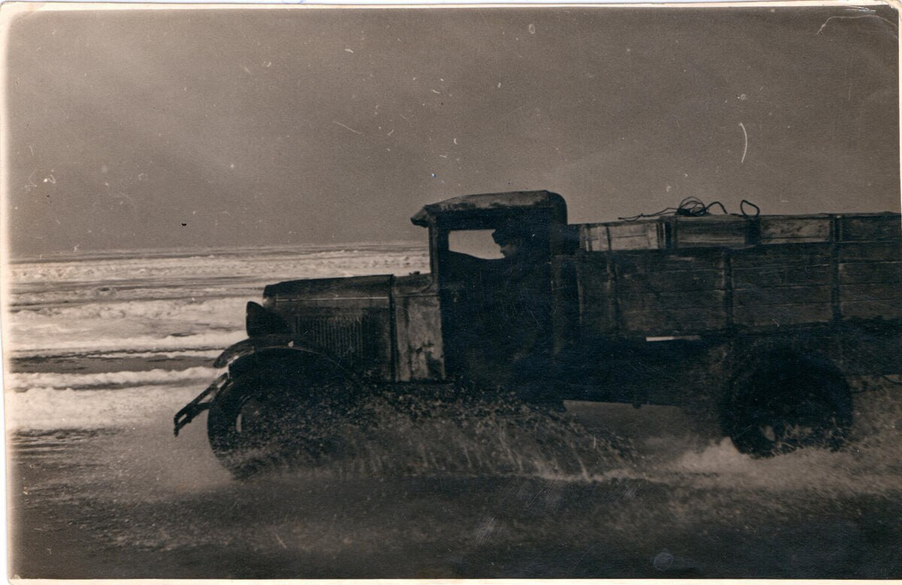
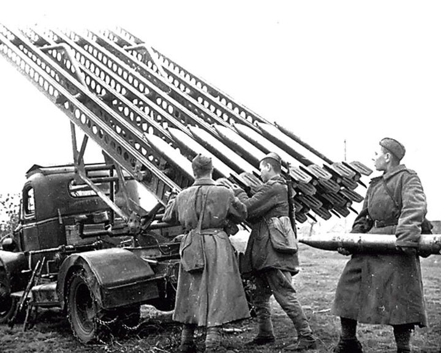
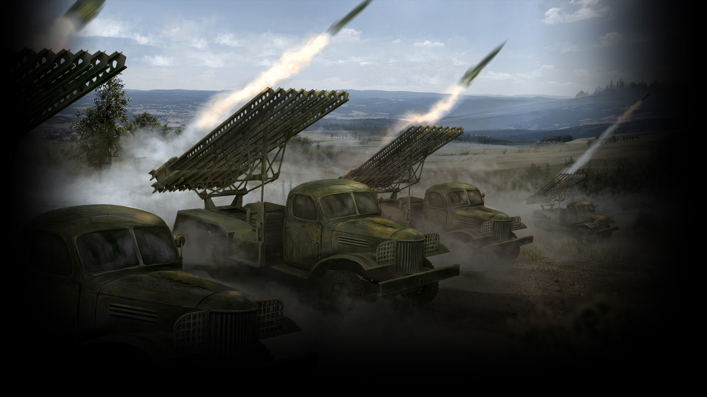
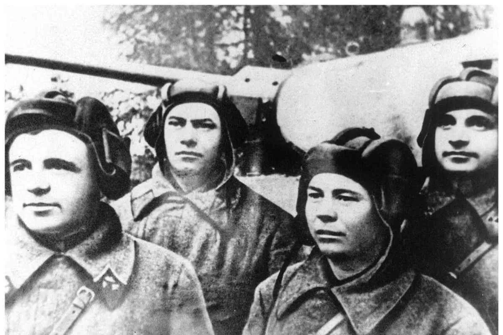
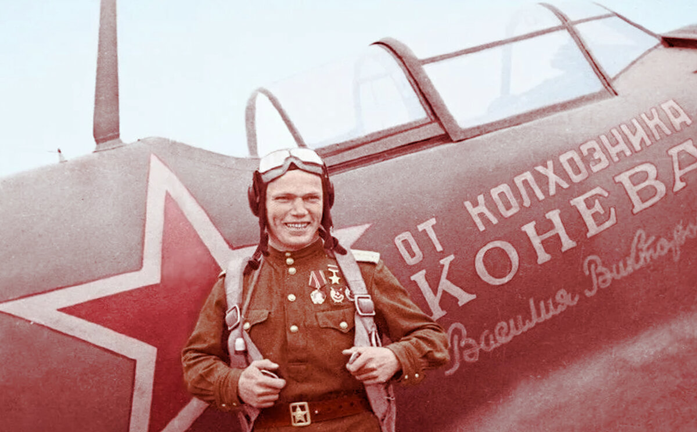
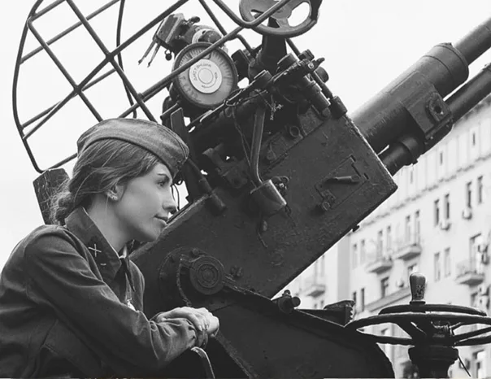
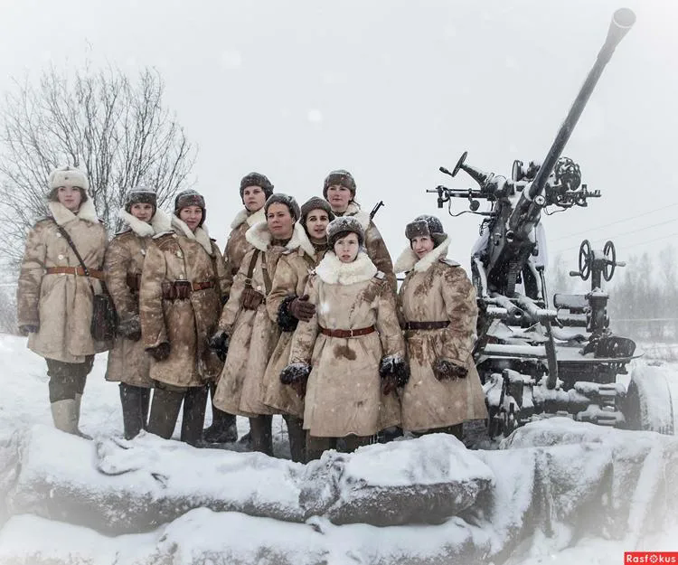

ВСЕ ДЛЯ ПОБЕДЫ
"ПЯТЬ ПОДВИГОВ ЧЕЛОВЕКА И ТЕХНИКИ ДЛЯ ВЕЛИКОЙ ПОБЕДЫ"
ГАЗ-АА "Полуторка"
1. Род войск: автомобильные войска.
2. Название (сокращение): автомобиль ГАЗ-АА.
3. Прозвище техники: «Полуторка», «Полундра».
4. Дата начала производства: 1938 год.
5. Конструктор техники: Андрей Александрович Липгарт.
6. Назначение техники: Грузовой автомобиль. На нём возили все – от боеприпасов, личного состава и продовольствия, до буксировки пушек и специальной техники (санитарная помощь). «Полуторки» часто использовали в силах противовоздушной обороны, монтируя на них зенитные или прожекторные установки, а также счетверенные пулеметы Максим.
7. Технические характеристики:
- Масса – 1,75 т
- Грузоподъемность – 1,5 т
- Число мест в кабине – 2
- Двигатель – карбюраторный (бензиновый)
- Мощность двигателя – 50 л.с.
- Максимальная скорость – 70 км/ч
- Запас хода – 215 км
8. Преимущества техники: Главными качествами довоенной «полуторки» были её простота и надёжность. Работала на любом бензине, имела хорошую проходимость. Из металла делали лишь раму, трансмиссию, мосты и двигатель, все остальное – деревянное. Тормоза только задние, довольно легкая, что не давало ей утонуть на плохой дороге. Но в годы войны ГАЗ-АА упростили до предела - выпускалась военная версия без бамперов, глушителей, убрались тормозные механизмы с передних колес, кабина стала деревянной, лишилась дверей (их заменяли брезентовые пологи). Водители ценили её за простоту конструкции и надежность: сборка не требовала высокой квалификации, а ремонт легко проводили в полевых условиях. Это было важно в грозные военные годы.
9. Вклад техники в Победу: На 22 июня 1941 года грузовики ГАЗ-АА составляли почти 60 процентов автопарка Красной армии. Этот автомобиль сыграл ключевую роль в тыловом обеспечении советских войск. ГАЗ-АА стал одним из символов победы в Великой Отечественной войне и легендарной «Дороги жизни» в Ленинграде.
10. Места памяти техники: Памятник «Полуторка» (Памяти машины-солдата) на мемориальном комплексе «Дорога жизни» (г. Всеволожск, Ленинградская область).
Подвиг водителей «Дороги жизни»

«Каждая полуторная машина везет продовольствие на 10 тысяч пайков, на 10 тысяч человек. Водитель, спасай эти жизни!» - такая табличка встречала каждого водителя, съезжающего на лёд легендарной ладожской «Дороги жизни». Мысль об этом гнала вперед почти 5 тысяч шоферов, обслуживавших трассу, на протяжении двух зим ее работы. Всего за самую страшную блокадную зиму 1941-1942 годов работавшие на «Дороге жизни» водители доставили в Ленинград 361 тысяч тонн грузов, в том числе 262 тысяч тонн продовольствия, и вывезли полмиллиона людей - в основном женщин и детей.
После того как вокруг Ленинграда в сентябре 1941 года сомкнулось блокадное кольцо, воды Ладожского озера оставались единственной транспортной артерией (кроме воздушной), по которой еще осуществлялось снабжение 3-ёх миллионного города. Суда Ладожской флотилии, несмотря на обстрелы, курсировали по нему ежедневно. Однако было очевидно, что как только на озере встанет лед, сообщение с городом прервется. Чтобы не допустить этого, решено было реализовать казавшееся почти невозможным - и с конца октября на Ладоге начались работы по подготовке ледовой трассы, которая очень скоро станет известна в Ленинграде и за его пределами как легендарная «Дорога жизни». 22 ноября 1941 года на лед выехала первая колонна из 60 грузовиков ГАЗ-АА 388-го отдельного автомобильного батальона. Именно легендарные «полуторки», маломощные грузовики ГАЗ- АА, по причине своей относительно небольшой массы оказались наиболее пригодными для такой дороги и открыли движение по Ладоге. В ледяных торосах, на не укатанной еще трассе, они зачастую буксовали. В первое время водитель, сбившийся с пути, рисковал расстаться с жизнью - шансов на то, что в плохой видимости, в метели, а тем более в ночной темноте или утреннем полумраке его хватятся и обнаружат, были невелики. Большинство водителей, заплутавших в первые дни на незнакомой, заснеженной дороге, замерзали и погибали. В кабинах советских машин того периода просто- напросто отсутствовала печка.
В целях светомаскировки фары предписывалось гасить - фронт зачастую приближался к «Дороге жизни» на расстояние 15 км, над ней курсировала немецкая авиация. Позднее, в следующие зимы, на Ладоге появится настоящая инфраструктура — посты техпомощи, пункты обогрева и питания, регулировщицы, стоящие через равные промежутки пути, и знаки, но в конце осени - начале зимы 1941-го года водители, выбирая между опасностью попасть под обстрел немецкой авиации и уйти с трассы в условиях плохой видимости и замерзнуть насмерть на ладожских просторах чаще всего выбирали первое и включали фары. Опасности, ждавшие шоферов, которые первыми прокладывали путь по льду в осажденный город, не ограничивались риском сбиться с дороги. Первые автоколонны отправлялись в рейс с полупустыми баками - горючего должно было впритык хватить на путь в один конец и с распахнутыми дверями машин на малой скорости. Все эти меры, призванные не только уберечь водителей, но и сэкономить бесценные в военных условиях ресурсы, говорили о постоянно подстерегавшей опасности - провалиться под не успевший достаточно окрепнуть, не так давно вставший ладожский лёд. Бензин и антифриз для первых рейсов на «большую землю» были доставлены в город на самолетах. Если машине суждено было погибнуть, драгоценное топливо не должно было пойти вместе с ней под лед, а водителю надо было успеть покинуть кабину. С тем же расчетом в колонне предписывалось строгое соблюдение стометровой дистанции - на случай, если лед под впереди идущей машиной не выдержит нагрузки.
При этом большинство водителей, обеспечивавших движение на «Дороге жизни», сами были ленинградцами. Многие из тех, кто ежедневно доставлял в город продовольствие, жили по блокадной норме. По установившейся вскоре практике в город машины шли, груженые продуктами, и в первую очередь мукой. Оттуда с людьми, которых нужно было бы вывезти из голодающего города. Большую часть пассажиров составляли ленинградские дети. И если открытые двери могли спасти водителя, который вез в машине груз, то в случае, когда полуторка, переполненная людьми, проваливалась под лед или попадала под обстрел, эта мера, увы, спасти не могла. Многие из тех, кто благодаря ладожской дороге обрел вторую жизнь, на этом пути стали свидетелями того, как следовавшая за ними или прямо перед ними в колонне машина, с такими же пассажирами, как и они, мгновенно уходила под лед, в особенности при обстрелах. Помогла спасти «Дорога жизни» и многие хранившиеся в городе исторические ценности.
Первая автомобильная «навигация» закрылась только в середине весны, 21 апреля 1942-го года. К этому моменту лед, в разгар зимы достигший метровой толщины, начал таять. Почти на протяжении всего пути машины следовали по воде. У самого берега их груз иногда приходилось переносить на руках, подъехать к берегам вплотную толщина льда уже не позволяла. Однако до тех пор, пока оставался шанс доставить в город продовольствие, движение продолжалось. Короткие минуты отдыха ждали водителей только тогда, когда машины в очередной раз загружались. Благодаря их работе с 25 декабря в городе норма хлеба по рабочей карточке была увеличена на 100 г, по карточкам служащих иждивенцев и детей - на 75 г. Для многих ленинградцев, это стало спасением. «Дорога жизни» продолжала работу до марта 1943 года, всего на ней работало больше 20 тысяч водителей. Сколько из них отдали свои жизни, чтобы мог выжить блокадный Ленинград, точно не известно до сих пор.
БМ-13 "Катюша"

1. Род войск: артиллерия.
2. Название (сокращение): реактивная установка БМ-13.
3. Прозвище техники: «Катюша», «Орган Сталина».
4. Дата начала производства: реактивный снаряд М13 калибра 132 мм и пусковая установка на базе грузового автомобиля ЗИС6 БМ13 были приняты на вооружение 21 июня 1941 года (в 1943 году появилась единая для всей армии установка БМ13Н).
5. Конструктор техники: Андрей Григорьевич Костиков.
6. Назначение техники: Установка была разработана прежде всего, как противотанковое оружие. Она состояла из удлиненной металлической рамы, на которой размещалось до 16 неуправляемых ракет. Сами ракеты хранились в четырех блоках по четыре штуки и имели дальность действия около 6 миль. Боевая машина имела поворотный и подъемный механизмы простейшей конструкции, кронштейн для крепления прицела с обычной артиллерийской панорамой и большой металлический бак для горючего сзади. Стекла кабины закрывались броневыми откидными щитами. На передней панели кабины располагался небольшой ящик с вертушкой, напоминающей диск телефонного аппарата, и рукояткой для поворачивания диска - это был «пульт управления огнем». Реактивная установка монтировалась на шасси разных автомобилей: в ранний период – на отечественный «ЗИС-5/6», позже - «Студебекер» по ленд- лизу).
7. Технические характеристики:
- Наибольшая дальность стрельбы – 8470 м
- Калибр реактивного снаряда – 132 мм
- Вес снаряда – 42 кг
- Вес установки без снарядов – 7,2 т
- Количество снарядов в залпе – 16
- Время одного залпа – 7-10 секунд
- Время перехода из походного в боевое положение – 2-3 минуты
- Боевой расчет – 7 человек
8. Преимущества техники: Ракеты установки могли нести различные боеголовки - от фугасных снарядов до зажигательных бомб. Это позволило с относительной легкостью нацеливаться на немецкие танки и уничтожать их. Один залп из "катюши" мог уничтожить целый танковый строй. Катюши" использовались против немецких танков и других военных машин, обеспечивая Красной Армии огромное преимущество в бою. Это позволило им быстро уничтожать бронированные цели, что дало им возможность продвигать свои позиции и брать под контроль целые города. Оружие также использовалось в наступательных операциях, обеспечивая сильную артиллерийскую поддержку. Помимо того, что установки были эффективным средством на поле боя, они также использовались для поднятия боевого духа советских войск. Ракеты были невероятно громкими, их можно было увидеть летящими по небу, что вселяло в солдат чувство благоговения и уверенности в своей способности победить немцев. В первую очередь реактивные установки БМ- 13 получали только воинские части в Красной Армии с наименованием «гвардейские». Являясь секретным оружием, реактивная установка БМ-13 имела устройство для самоликвидации при угрозе захвата противником.
9. Вклад техники в Победу: "Катюша" стала одним из самых узнаваемых символов и знаковых видов оружия Великой Победы. Она использовалась во многих сражениях Великой Отечественной войны, включая Курскую битву, операцию «Багратион» и битву за Берлин. Использование БМ-13 позволило Советской Армии получить стратегическое преимущество над немецкими войсками. Реактивные установки обеспечили важнейшую артиллерийскую поддержку наземных войск и помогли деморализовать противника. Кроме того, вид пролетающих над головой ракет придавал войскам эмоциональный подъем и чувство безопасности. К концу Великой Отечественной войны советская реактивная артиллерия насчитывала 519 дивизионов с более чем 3 тысячами боевых машин.
10. Места памяти техники: Памятник «Катюша» на мемориальном комплексе «За нашу Советскую Родину» (г. Орша, Витебская область)
Подвиг батареи капитана Ивана Флёрова

Боевым крещением БМ 13 принято считать оборонительное сражение утром 14 июля в Орше. 1 я экспериментальная батарея реактивных минометов под командованием капитана Ивана Андреевича Флёрова в составе семи боевых установок ударила первыми залпами «катюши» по скоплению живой силы и боевой техники врага на железнодорожной станции…
В самом начале Великой Отечественной войны советские артиллеристы даже не успели толком обкатать новую реактивную установку, приноровиться к ней. С конвейера она сразу пошла на фронт. В ночь на 2 июля 1941 года, из Москвы по Можайскому шоссе батарея капитана Ивана Флёрова, вооруженная семью опытными боевыми установками БМ-13 на базе ЗИС-6, выехала на фронт по маршруту: Москва–Ярцево–Смоленск–Орша. В составе батареи были одна легковая машина и 44 грузовые машины (для перевозки 768 реактивных снарядов М-13). Иван Андреевич Флёров был из тех офицеров-строевиков, о которых говорят, что он родился в гимнастерке. Ходил он всегда в военной форме, высоко подняв голову, даже как-то горделиво. Голос имел спокойный и уверенный. Светло-серые глаза всегда смотрели на собеседника доброжелательно, располагая к откровенному разговору.
Уже 6 июля батарея прибыла на место и вошла в состав 20-й армии Западного фронта. До 12 июля она находилась на позиции в районе Борисова и только чудом сумела отойти до подрыва мостов. Наступил исторический день боевого крещения - 14 июля 1941 года. В 15 часов капитан Флёров дал команду открыть огонь по врагу. Семь пусковых установок БМ-13 нанесли удар по скоплению живой силы и танков фашистов в районе города Орша. Действительно, результаты стрельбы были отличными - сплошное море огня. Враг понес огромные потери в живой силе и боевой технике. Более того, все гитлеровцы, уцелевшие на восточном берегу, были взяты нашими подразделениями в плен. А переправа в течение нескольких часов бездействовала и в дальнейшем уже больше не использовалась врагом с прежней интенсивностью. Этот первый удар был настолько эффективным и сокрушительным, что гитлеровцы целый день вывозили раненых и убитых, остановив наступление на сутки Применение реактивной артиллерии ошеломило гитлеровцев. На забитых вражескими эшелонами железнодорожных путях пылал огненный смерч. Новое оружие показало высокую эффективность и стало грозой для немецких войск во всех последующих боевых операциях. Это способствовало принятию решения об ускоренном развертывании серийного производства реактивных пусковых установок и снарядов к ним и формировании подразделений, а затем и частей реактивной артиллерии. К началу августа на Западном фронте действовало уже несколько батарей реактивной артиллерии. Примерно в то же время реактивную технику стали называть в народе ласковым именем «Катюша». 19 июля батарея Ивана Флёрова произвела три залпа по городу Рудне Смоленской области, когда батальон немецкой 5-й пехотной дивизии сменял 12-ю танковую дивизию. За три месяца боевых действий она нанесла огромный урон немцам. При этом батарея Флерова не просто била немцев, но и поднимала дух советских бойцов, которые в то время были измотаны постоянными отступлениями.
Судьба легендарной батареи БМ-13 оборвалась в начале октября 1941 года. Фашисты устроили за «Катюшами» настоящую охоту, но батарея, дав залп, сразу меняла позицию. Позже этот прием будут использовать многие подразделения реактивной артиллерии. А в начале октября 1941 года в составе группировки войск Западного фронта батарея Флерова оказалась в немецком тылу. Двигаясь к линии фронта из тыла в ночь на 7 октября, она попала во вражескую засаду под деревней Богатырь (Смоленская область). Капитан Иван Андреевич Флеров вместе с большей частью личного состава батареи погиб, успев выпустить весь боезапас. По приказу командира все боевые машины были взорваны - оккупантам не должны были достаться передовые технологии. Сам капитан, будучи тяжело раненным, взорвал себя вместе с головной пусковой установкой. Из окружения смогли выйти лишь 46 бойцов. Капитан Флёров и его погибшие товарищи, которые с честью выполнили свой долг, считались пропавшими без вести. Их настоящая судьба стала известна лишь после обнаружения документов. За проявленный героизм капитан Иван Андреевич Флеров в 1963 году был посмертно награжден орденом Отечественной войны 1-й степени. А в 1995 году ему посмертно присвоили звание героя России. Сегодня о подвиге его батареи напоминают памятник в городе Орша и обелиск у города Рудня (Смоленская область).
Танк Т-34-76/85
1. Род войск: танковые войска.
2. Название (сокращение): танк Т-34-76/85.
3. Прозвище техники: советские солдаты просто называли этот танк «тридцатьчетверкой», но у него были и другие прозвища. Раздавали их за особенности внешнего вида. Классические модели, поступавшие с Харьковского завода, имели башни со скошенными боками, поэтому их называли «Пирожками». В Челябинске и Омске производили танки с многогранными башнями – «Гайки». А свердловские «Формочки» появились благодаря технологии литья башен в земляных формах. Немцы же прозвали его «Микки Маусом» за характерный вид двух люков.
4. Дата начала производства: 19 декабря 1939 года.
5. Конструктор техники: Михаил Ильич Кошкин.
6. Назначение техники: Средний танк - одна из самых известных и распространенных боевых машин в истории. Отличалась высокой эффективностью, маневренностью, проходимостью, меткостью, дальнобойностью и наличием разнообразного вооружения. Боевая масса Т-34 не превышала 30 т. Поэтому они двигались быстрее танков противника и легко занимали выгодные позиции. Широкие гусеницы (550 мм) позволяли не терять контроль при движении по пересеченной местности и быстро форсировать водные преграды. Они использовались для отражения агрессии немецких войск с первых дней войны. В приграничных округах располагалось 938 машин, но благодаря ускорению производства удалось быстро нарастить численность машин. К битве за Москву Т-34 стали основой ударной силы Красной армии. Они принимали участие в Сталинградской битве, сражении на Курской дуге, освобождении Ленинграда и западных регионов СССР.
7. Технические характеристики:
- Длина корпуса без орудия – 5,92 м
- Ширина – 3 м
- Высота – от 2,41 до 2,72 м
- Ширина траков – 50 см
- Боевая масса – от 26,5 т до 30,9 т
- Максимальная скорость – 54 км/ч
- По пересечённой местности – 36 км/ч
- Запас хода – 300 км
- Броня лобовой башни – 45 мм
- Двигатель – дизельный, 500 л.с. (временно применялись карбюраторные авиадвигатели М-17Т/Ф)
- Объём топливных баков – от 460 до 540 л (внутренние), до 270 л (наружные)
- Вооружение – пушка 76 мм (позднее – 85 мм), 2 пулемёта ДТ калибра 7,62 мм
- Экипаж – 4 человека (в поздних версиях – 5)
8. Преимущества техники: Средний танк Т-34 был гусеничным танком. Впервые здесь был применён принцип расположения броневых плит под углом, снаряды порой просто отскакивали от такой брони. В нём сочетались скорость, боевая мощь и манёвренность, простота производства и инновационные конструкторские решения. Превосходство Т-34 на поле боя обусловил и мощный дизельный V-образный 12-цилиндровый двигатель жидкостного охлаждения мощностью 500 л. с. На тот момент он не имел аналогов в мире по экономичности и надёжности. Ещё одним из конкурентных преимуществ танка стала простота в обслуживании и ремонте, что было важным условием для успешного применения на фронте. Эксплуатировалась в любых условиях, быстро и легко производилась и ремонтировалась. Производство танков на Сталинградском тракторном заводе не прекращалось даже во время городских боев. Конструкция Т-34 оказалась оптимальной для своего времени. Она не была лишена недостатков, но позволяла получать преимущество над противником и решать любые задачи на поле боя. Инженерам пришлось дорабатывать танк в процессе войны, поэтому все их усилия были направлены на повышение эффективности, а не на создание комфортных условий для экипажа. Но этого оказалось достаточно для сохранения машиной боеспособности на протяжении многих десятков лет.
9. Вклад техники в Победу: Т-34 не только самый массовый танк Второй мировой, но и самый часто дорабатываемый. За годы войны он получила массу улучшений и модификаций, его производили сразу несколько заводов. Советский средний танк Т-34 стал настоящим символ Великой Победы. Всего за годы войны было выпущено свыше 53 тыс. Т-34 всех серий и модификаций. Т-34 стал основным и самым лучшим средним танком Второй мировой войны. Он оказал значительное влияние на развитие танкостроения по всему миру.
10. Места памяти техники: Памятник танкистам 49-й армии «Т-34» (д. Калиново, Серпуховский район, Московская область)
Подвиг экипажа старшего лейтенанта Дмитрия Лавриненко

Среди героев Великой Отечественной войны имя старшего лейтенанта Дмитрия Фёдоровича Лавриненко выделяется особо. Уникальные способности командира танка Т-34, а также находчивость и смелость героя на поле боя привели к тому, что он стал самым эффективным танкистом Красной армии. За два с половиной месяца ожесточенных боев под Москвой танк с номером 20 под командованием Лавриненко уничтожил 52 боевые машины и большое количество орудий противника. В начальный период войны Т-34 не имел серьёзных преимуществ перед танками вермахта. Схожая броня и пушка делали шансы почти равными, лишь мастерство отдельных командиров позволяло Т-34 выходить с поля боя победителями. Дмитрий Фёдорович Лавриненко стал командиром, который использовал все качества легендарного танка, и прикрыл все его изъяны. Он использовал хорошую проходимость «тридцатьчетвёрки», нападал из засады и крутым манёвром гнал немцев, не оставляя им шансов на сопротивление. И даже если немцы могли оказать сопротивление, командир экипажа заранее изготавливал ложные цели для гитлеровцев. Его тактика работал безотказно, в каждом бою его танкисты выходили победителями.
В ноябре 1941 молодой офицер провел уникальный бой с танковой группой противника, прорвавшей советский тыл. Лавриненко выставил свой Т-34 навстречу вражеской колонне вблизи шоссе, идущего на Шишкино. Танк находился в засаде прямо посреди поля. Выкрашенный белилами, он был не виден врагу на заснеженной местности. белый цвет Т-34 сливался с окружающим зимним пейзажем. 18 танков с крестами обнаружили тридцатьчетверку лишь после того, как она открыла огонь. Но было уже поздно. С близкой дистанции экипаж Лавриненко нанес удар сначала по головной, а затем по замыкающей бронемашине, тем самым наглухо закупорив движение. Всего же он в скоротечном бою Т-34 уничтожил шесть немецких танков, после чего ускользнул перелесками. Его действия позволили советским стрелковым полкам своевременно отойти и избежать окружения. Однажды на подступах к городу Серпухов неожиданно появились немецкий батальон на мотоциклах и бронемашинах. Комендант города попросил у единственного танка Т-34 под командованием Лавриненко о помощи. Узнав оперативную информацию, Т-34 расположился на опушке леса. Дорога с этого положения просматривалась идеально. Подпустив немцев на 100-150 метров, он начал расстреливать колонну. Когда немцы определили положение тридцатьчетверки, экипаж Лавриненко уже сменил своё местоположение и продолжил бой. Когда все противотанковые расчёты были уничтожены, Т-34 протаранил оставшуюся технику.
В начале декабря 1941 года на его боевом счету лейтенанта Дмитрия Лавриненко было уже 37 гитлеровских танков. В это время 1-я гвардейская бригада участвовала в контрнаступлении под Москвой, освобождая деревни и города. В передовом отряде вместе с саперами двигалась рота Дмитрия Лавриненко. 18 декабря на подступах к Волоколамску его «тридцатьчетверки» ворвались сначала в село Гряды, а затем в Покровское, стремительно уничтожая огнем и гусеницами местные гарнизоны. Разделавшись с противником, старший лейтенант повел роту в сторону деревни Горюны, куда отступили немецкие танки. Переняв советскую тактику, нацисты решили устроить «лавриненковцам» засаду на шоссе. Они попытались зайти роте в тыл, но старший лейтенант разгадал замысел и развернул боевые машины навстречу. В этот момент подоспели основные силы бригады, и в итоге немцы сами попали в клещи. По воспоминаниям танкового генерала Михаила Катукова, «разгром им был учинен полный». Экипаж Т-34 Лавриненко уничтожил два противотанковых орудия и в 28-м для себя по счету бою, подбил 52-й танк, став самым результативным танкистом-асом Красной армии. После того, как операция в Горюнах была завершена, Лавриненко выбрался из танка, чтобы доложить о результатах боя командованию. В этот момент немцы начали обстрел из минометов. Осколок оборвал жизнь 27-летнего героя-танкиста. Старший лейтенант Дмитрий Фёдорович Лавриненко посмертно был награжден орденом Ленина, а вот звание Героя Советского Союза ему присвоили лишь в мае 1990 года указом президента СССР Михаила Горбачева за мужество и героизм, проявленные в боях с немецко-фашистскими захватчиками (посмертно).
Самолёт Ла-5
1. Род войск: авиация.
2. Название (сокращение): самолёт Ла-5.
3. Прозвище техники: «Лавочкин».
4. Дата начала производства: июль 1942 года.
5. Конструктор техники: Семён Алексеевич Лавочкин.
6. Назначение техники: Воздушные бои на малой высоте считаются главной задачей, для которой конструировался истребитель Ла-5, устройство и управляемость которого сделали его самой лучшей моделью в советской авиации тех времен. Он превосходил показатели немецкого аналога FW («Фокке-Вульф»), который был значительно тяжелее и имел низкие разгонные характеристики. Управляемость советской машины предусматривала, что она путем пикирования на больших скоростях, уклонялась от атак, сама переходила в позицию для атаки в пологом наборе высоты. Это было возможным, поскольку Ла-5 имел лучшую скороподъемность, чем немецкий истребитель.
7. Технические характеристики:
- Экипаж – 1 пилот
- Вес истребителя – 3290 кг
- Максимальная скорость – 648 км/ч
- Дальность полёта – 765 км
- Запас полёта – до 930 км
- Практический потолок – 11 км
- Мощность двигателя – 1750 л.с.
- Вместимость баков – 460 л (масло – 46 кг)
- Вооружение – две 20-мм пушки
- Бомбовая нагрузка – до 2 бомб по 100 кг
8. Преимущества техники: Воздушные бои на малой высоте считаются главной задачей, для которой конструировался истребитель Ла-5, устройство и управляемость которого сделали его самой лучшей моделью в советской авиации тех времен. Он превосходил показатели немецкого аналога FW («Фокке-Вульф»), который был значительно тяжелее и имел низкие разгонные характеристики. Управляемость советской машины предусматривала, что она путем пикирования на больших скоростях, уклонялась от атак, сама переходила в позицию для атаки в пологом наборе высоты. Это было возможным, поскольку Ла-5 имел лучшую скороподъемность, чем немецкий истребитель.
9. Вклад техники в Победу: Самолет заслужил высокую оценку не только советских и немецких летчиков, но и авиаспециалистов из числа союзников. Они называли Ла-5 лучшим фронтовым истребителем Второй мировой войны, не имевшим себе равных на Восточном фронте. Именно этот самолёт позволил советским пилотам на равных вести борьбу с любым немецким истребителем, изменив тактику воздушного боя с оборонительной на активную наступательную. В общей сложности за три года Великой Отечественной войны было собрано 10 тысяч истребителей Ла-5 всех модификаций. Он стал вторым по массовости самолётом (после легендарного штурмовика Ил-2) в советской авиации военного времени.
10. Места памяти техники: Памятник-самолёт Ла-5 «Ивану Кожедубу» (п. Уразово, Валуйский район, Белгородская область)
Подвиг Ивана Никитовича Кожедуба

Именно на Ла-5ФН во время боев на Курской дуге открыл свой боевой счет Иван Никитович Кожедуб - будущий трижды Герой Советского Союза и один из двух самых результативных советских летчиков времен войны. Здесь он набрал больше всего побед — 47, поскольку остальные 15 он одержал, воюя уже на Ла-7, последней и лучшей модификации легендарного истребителя.
Первый воздушный бой Иван Кожедуб провел на Ла-5 в марте 1943 года. В паре с ведущим, он должен был охранять аэродром, но взлетев, летчик потерял из вида второй самолет, получил повреждения от противника, а затем попал еще и под свою зенитную артиллерию. Кожедуб с трудом посадил самолет, в котором насчитали более 50 пробоин. Боевой счет своим победам летчик-ас открыл 6 июля 1943 года на Курской дуге, сбив пикирующий бомбардировщик Ju-87. С мая 1944 года Кожедуб воевал на новой модификации истребителя Лавочкина – Ла-5ФН (бортовой № 14), который был построен на деньги колхозника-пчеловода Сталинградской области Василия Конева. Уже на следующий день Кожедуб одержал вторую воздушную победу, сбив еще один Ju-87, а в воздушном бою 9 июля смог сбить сразу 2 немецких истребителя Me-109. В течение шести последующих дней летчик-ас записывает на свой счет ещё 7 вражеских самолётов. Уже в августе 1943 года Иван Кожедуб становится командиром эскадрильи. Первое звание Героя Советского Союза с вручением ордена Ленина и медали «Золотая Звезда» командир эскадрильи старший лейтенант Иван Кожедуб получил 4 февраля 1944 года за 146 боевых вылетов, в которых он сбил 20 немецких самолетов. В это же время полк проходит процедуру перевооружения, получая новые истребители Ла-7. Летчику-асу достался самолёт с бортовым № 27. Иван Кожедуб будет летать на нем до самого конца войны. Второй медалью «Золотая Звезда» гвардии капитан Иван Кожедуб был награжден 19 августа 1944 года за 256 совершенных боевых вылетов, в которых он лично сбил 48 немецких самолетов. Однажды во время воздушного боя, который проходил над территорией противника, самолет Ивана Кожедуба был подбит. На машине заглох двигатель и он, чтобы не сдаваться в плен немцам, выбрал для себя на земле цель и начал на нее пикировать. Когда до земли оставалось совсем немного, двигатель истребителя неожиданно снова заработал и Кожедуб смог вывести машину из пикирования и благополучно вернулся на аэродром. 12 февраля 1945 года Иван Кожедуб в паре со своим ведомым лётчиком патрулировали пространство над передним краем, находясь в режиме «свободной охоты». Обнаружив группу из 13 истребителей FW-190, советские летчики немедленно атаковали их, сбив при этом 5 немецких истребителей. Три из них записал на свой счет Иван Кожедуб. 15 февраля 1945 года в полете над Одером легендарный лётчик смог сбить немецкий реактивный истребитель Me-262.
К концу Великой Отечественной войны гвардии майор Иван Никитович Кожедуб выполнил 330 боевых вылетов и провел 120 воздушных боев, сбив при этом 64 самолета противника, что стало лучшим достижением среди всех советских асов. Третью «Золотую Звезду» лётчик-герой получил уже после войны за высокое воинское мастерство, личное мужество и отвагу. Рассказывают, что Иван Кожедуб очень любил свои самолеты, особенно свой первенец Ла-5, считал их «живыми». Ни разу за всю войну легендарный лётчик не покинул свою машину, даже горящую.
Автоматическая зенитная пушка 61-К

1. Род войск: противовоздушная оборона (ПВО).
2. Название (сокращение): 37 мм автоматическая зенитная пушка – 61-К.
3. Прозвище техники: «зенитный автомат».
4. Дата начала производства: 1939 год.
5. Конструктор техники: Михаил Николаевич Логинов.
6. Назначение техники: Пушка активно использовалась в течение всей Великой Отечественной войны как основное средство ПВО прифронтовой полосы для прикрытия войск от низколетящих и пикирующих самолетов противника. 61-К применялась для уничтожения немецких штурмовиков, истребителей и пикирующих бомбардировщиков, летящих со скоростями до 250 м/с. Угол горизонтального обстрела неограничен - 360°, по вертикали – до 90°. Окоп для стрельбы по воздушным целям отрывали в виде круглой ямы. Дно ямы служило площадкой для установки зенитного средства. Бруствер делали такой высоты, чтобы в случае необходимости из окопа можно было вести огонь по наземным целям. Это позволяло использовать ее в случае крайней необходимости для стрельбы по наземным целям: живой силе, огневым точкам, бронеавтомобилям и автомобилям. Зенитка также использовалась для борьбы с немецкими танками. Благодаря 37-мм калибру можно было успешно уничтожать не только легкие, но и средние танки (в боекомплект пушки были включены бронебойные комплекты). Снаряд с расстояния 100 м пробивал 97-мм броню. До 1942 года пушка 61-К могла уничтожать любую бронетехнику Вермахта.
7. Технические характеристики:
- Расчёт – 7 человек
- Калибр – 37 мм
- Масса в боевом положении – 2100 кг
- Длина ствола – 2316 мм
- Скорострельность – 160–180 выстрелов/мин
- Начальная скорость полёта снаряда – 960 м/с
- Наибольшая дальность стрельбы – 8500 м
- Дальность прямого выстрела – 940 м
- Бронепробитие – до 97 мм
- Высота поражения – до 3 км
- Дальность поражения – до 4 км
8. Преимущества техники: Важнейшим преимуществом К-61 было наличие зенитного прицела, который автоматически направлял ствол орудия в точку, где окажется самолет в момент подлета снаряда. Кроме того, советская пушка была легче и требовала меньше времени для перевода в боевое положение. Несомненными достоинствами зенитки были надежная работа механизмов в условиях загрязнения и отсутствия смазки, непрерывное питание автомата патронами и удобство обслуживания. К-61 обладала высокой маневренностью, легко и быстро переводилась из походного положения в боевое и обратно, а в случае внезапного появления воздушного противника позволяла вести стрельбу с ходу и с коротких остановок, т. е. без перевода пушки в боевое положение. На зенитках, начиная с 1943 года, на станке монтировалось щитовое прикрытие, защищающее расчет от пуль и осколков. Как в походном, так и в боевом положении лафет орудия находился на четырехколесной повозке ЗУ-7, которая имела подрессоренные колеса автомобильного типа и обеспечивала скорость движения до 60 км/ч.
9. Вклад техники в Победу: Пушка К-61 стала основной зениткой Красной армии в годы Великой Отечественной войны. Она являлась первой советской автоматической зениткой, запущенной в крупносерийное производство. Всего было выпущено более 18,5 тысяч единиц. Зенитка сыграла ключевую роль в ходе боевых действий наземных средств ПВО сухопутных войск и обеспечении прикрытия советского тыла. Она оказалась лучшей советской зениткой среднего калибра из применявшихся в годы Великой Отечественной войны. Легендарными пушками калибра 37-мм было сбито больше немецких самолетов, чем всеми остальными орудиями, вместе взятыми. Конструкция зенитки образца 1939 года оказалась очень удачной, что подтверждается продолжительной службой орудия и созданием большого количества его модификаций.
10. Места памяти техники: Памятник зенитной установке К-61 «Защитницам неба» (г. Ростов- на-Дону)
Подвиг женщин-зенитчиц в Сталинградской битве
Когда заходит речь о женщинах на Великой Отечественной войне, в первую очередь вспоминают, летчиц, снайперов и санитарок. Хотя именно в противовоздушной обороне воевало больше всего девушек - около 177 тысяч. Подавляющее большинство, порядка 120 тысяч из них, попали в войска согласно постановлению Госкомитета обороны от 25 марта 1942 года, которое предписывало заменить молодыми комсомолками служащих в войсках ПВО мужчин. К сожалению, среди девяти десятков девушек и женщин, заслуживших в годы войны высшее звание Героя Советского Союза, не оказалось ни одной зенитчицы или «прожектористки», хотя они внесли неоспоримый вклад в общее дело Великой Победы.

23 августа 1942 года в самом начале Сталинградской битвы 16-я немецкая танковая дивизия генерал-лейтенанта Хубе прорвался к окраинам города и появились в нескольких километрах от Тракторного завода. Вслед за танками шли две моторизованных и три пехотные дивизии. Советских войск в городе практически не было. Части 62-й армии, прикрывавшие город с севера, продолжали вести бои на левом берегу Дона. 1077-й зенитно- артиллерийский полк оказался единственной воинской частью на этом участке, в состав которого входили девушки-солдаты, все добровольцы, прослужившие всего несколько месяцев в армии, и не имевшие вообще опыта участия в боевых действиях. Эти девушки-солдаты также не проходили подготовку по ведению боевых действий против наступающей бронетанковой техники, и до того самого рокового дня они даже никогда не видели, что это такое и как все это происходит в действительности. Организационно, в состав полка входило 5 дивизионов, каждый из которых состоял из трех батарей по 4 зенитных орудия. Первоначально, задача полка 1077-го зенитного полка года состояла в том, чтобы обеспечивать противовоздушную оборону промышленной зоны Сталинграда. На вооружении полка стояли в основном 37-мм автоматические зенитные пушки (61-К) и немного 85-мм зенитных пушек (52-К). Поэтому все что оставалось делать в этой обстановке расчетам зенитных орудий - это поставить их на прямую наводку и открыть огонь в упор по наступающим немецким бронетанковым подразделениям.
Изначально задача полка заключалась в обеспечении противовоздушной обороны промзоны Сталинграда, но в условиях прорыва противника зенитчицы были вынуждены открыть огонь по наступающим танкам, поставив пушки на прямую наводку. На вооружении полка находились 37-мм зенитные пушки 61-К и немногочисленные 85-мм орудия.
23 августа на северной окраине города первыми в бой с танками вступили зенитчики. Зенитчики вынуждены были одновременно вести огонь по наземным и воздушным целям: атакующим танкам и самолетам, и при этом вести бой в условиях непрерывного воздействия артиллерийского и минометного огня противника. Женский полк под командованием полковника В. Е. Германа в течение двух дней оборонялся в одиночку, отбивая атаки немецкой бронетехники. Когда загорелись первые танки, не ожидавшие отпора немцы вызвали авиацию. Десятки бомбардировщиков Ю- 87 раз за разом пикировали на позиции девушек. Раз за разом немцы начинали атаки, и раз за разом отступали, теряя танки. После третьего налета командир запретил стрелять по самолетам, оставшиеся снаряды только для танков. За два дня ожесточенного боя женским полком было уничтожено или выведено из строя порядка 83 танков (из них 33 уничтожено) и 15 других бронемашин с пехотой, до тех трех батальонов наступающей пехоты, сбито 17 самолетов. Эти два дня дали столь необходимое время частям 62-й армии, чтобы занять оборонительные рубежи в городе и спасти Сталинград. Немцы не смогли развить намечавшийся успех и осуществить глубокий прорыв в Сталинграде исключительно благодаря сопротивлению, оказанному дивизионами 1077-го зенитного артиллерийского полка. Легендарная воинская часть развернула свои боевые порядки и грамотно использовала противотанковый ресурс зенитных установок К-61. Командир 14-го танкового корпуса вермахта, генерал Густав фон Витерхайм был отстранен от командования, так как не смог сходу подавить сопротивление столь малых сил.
Когда ворвавшиеся на уничтоженные огневые позиции 1077-го зенитно-артиллерийского полка немцы увидели, кто им противостоял, они были шокированы: в первоначальных боевых документах даже появились записи о том, что оборону в этом районе держали зенитные подразделения, полностью укомплектованные девушками - вчерашними выпускницами средней школы. Эти события послужили основой для исторической правды настоящего подвига «сталинградских зенитчиц-амазонок» 23 - 24 августа 1942 года в самом начале судьбоносного Сталинградского сражения.
10-1. Места памяти техники: Памятный знак девушкам-зенитчицам, защищавшим Сталинград (г. Волгоград)


{kind=link}
{kind=link}
{kind=link}
{kind=link}
{kind=link}